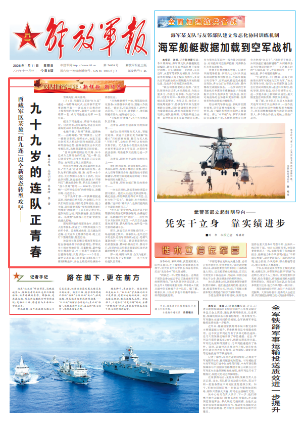

西藏军区某旅“红九连”以全新姿态转型攻坚——
九十九岁的连队正青春
■王恩生 解放军报记者 张磊峰 李 蕾
雪域高原，寒风凛冽。
1月4日，西藏军区某旅“红九连”通过一场特殊的仪式，拉开新年度军事训练序幕——该连战士母勇君在上级组织的考核中，取得个人综合成绩第一名，成为写进连史的第103名官兵。
把名字写进连史，将奋斗刻在战位。仪式结束，战车轰鸣，该连官兵向着海拔4000多米的高地挺进。
电磁干扰、“敌特”袭扰、道路被毁……山路崎岖，“敌”情骤至。记者一路跟训看到，指挥车内，该连王连长依托无人机实时回传的画面，沉着研判战场态势，指挥新型突击车灵活变换队形，选择隐蔽路线迂回穿插。
“昔日铁脚板闯出的天路，如今已成为立体突击的坦途。”这一幕，让记者感受到：这支红军连队正以全新姿态，在转型之路上攻坚突击。
作为历史厚重、战功卓著的红军连队，“红九连”走过99载风雨征程。连队先辈们转战陕、赣、豫、皖等10余个省份，先后参加大小战斗千余次。抗日战争时期，该连前身部队被誉为“开锋利刃”；解放战争时期，多名官兵被授予“战斗英雄”称号……1950年，官兵叫响“一切听从党安排”的铮铮誓言，进藏开路，戍边至今。
“当年先辈们靠一双铁脚板挺进高原，闯的是自然天险、生命禁区；今天我们转型攻坚，闯的是思维桎梏、能力关隘，同样需要那股‘党指向哪里就打到哪里’的闯劲！”王连长向记者介绍，连队转型之初，列装新装备，担负新使命，一场聚焦“新质战斗力生成”的攻坚战就此打响。
面对新列装的高原突击车、侦察无人机等装备，该连立下尽快形成战斗力的军令状。没有现成教案，官兵就边训边编，白天在车上练操作协同，晚上在灯下整理数据、复盘总结。
该连排长陈至锴为摸透某型狙击枪在极端条件下的弹道特性，带领攻关小组在雪地宿营、采集数据，最终编校出精准射表；中士刘龚平为解决通信链路难题，反复试验……3个月后，凝结全连官兵心血的第16版《战斗手册》新鲜出炉，并在上级组织的演练中得到验证。
“从熟练掌握手中枪，到驾驭信息化装备；从练强单兵硬功，到融入作战体系，一路走来，官兵迎难而上，始终斗志昂扬。”王连长说，转型路上，他们越闯越有劲头，越闯越有信心。
“开锋利刃”展锋芒，九十九岁的连队正青春。
这青春，印刻在创新攻关的探索里——
他们主动将训练向无人化、智能化延伸。该连中士薛启龙为破解“低慢小”目标侦察难题，整天与无人机“斗智斗勇”，总结出多种行之有效的反制手段。无人装备小组组长冉杰瑞在旅军事运动会上夺冠后，立即投身战法创新，助推连队实战能力进一步提升。
这青春，印刻在主动作为的担当上——
他们利用演练、驻训等契机，向兄弟部队取经，探索开展联合侦察、联合火力引导等课目合练；邀请院校专家授课辅导，帮助官兵梳理高原环境下军兵种协同的关键节点。
这青春，印刻在能打胜仗的使命中——
一次实兵对抗，该连奉命扮演蓝方固守要点。他们从实战出发构设阵地、确定战法，将防御战打得有声有色，让红方吃了“苦头”。复盘时，红方指挥员感慨：“这样的‘硬骨头’，是我们提高战斗力最好的磨刀石。”
“红九连”荣誉室内，连队在各个时期获得的荣誉奖牌静静陈列，仿佛进行着一场跨越时空的“对话”——历经99年岁月依旧风华正茂，一代代官兵血脉里奔涌不息、薪火相传的，始终是一往无前的磅礴斗志。
那天，该连官兵从训练场归来，一场连线随之展开。屏幕那头，是年近百岁的连队老指导员路晨；这边，是朝气蓬勃的新一代官兵。路老看着现代化的武器装备、精神抖擞的官兵，激动不已；年轻的官兵听着老前辈追忆徒步进藏的峥嵘岁月，热血沸腾。
那一刻，硝烟与风雪、白发与迷彩，在强军征程上交相辉映——九十九岁的连队正青春。
